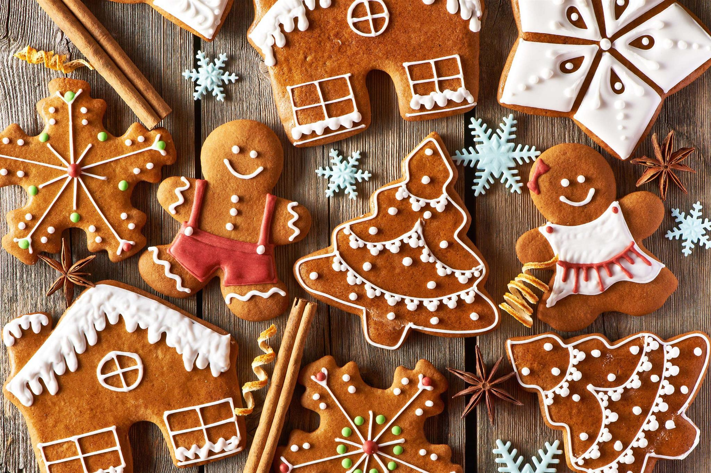
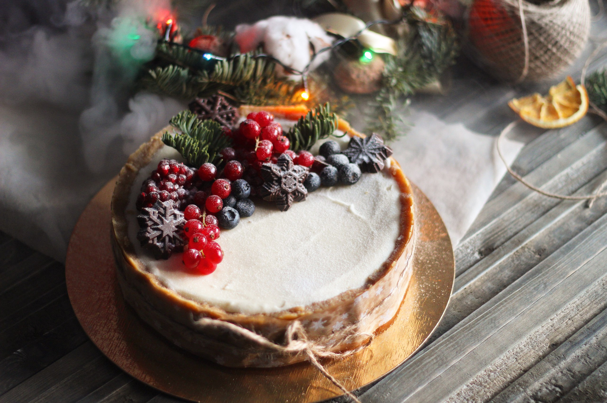
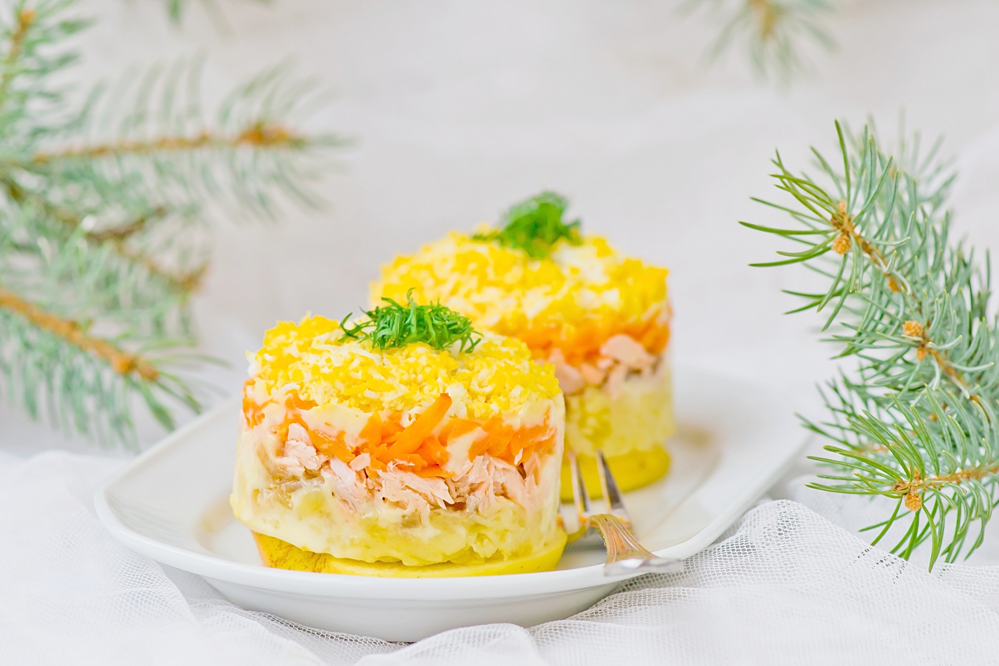
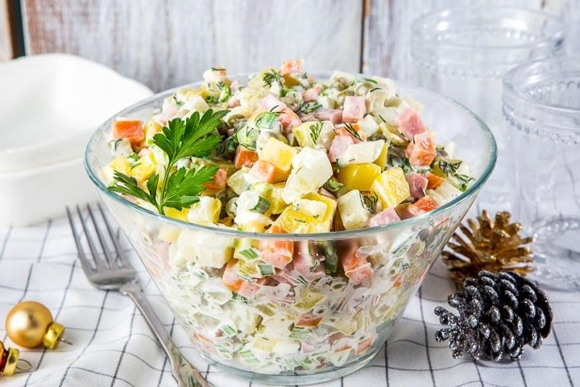
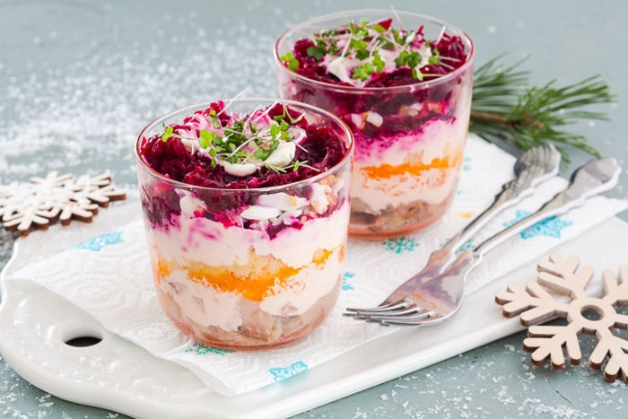

Home
Traditions
History
Recipes
Santa
Cats
Surprise
Новогодние
рецепты
Новый год - время холодильников, заполненных вкусной едой, это мама не дает есть до праздника :)
Это всевозможные салаты, закуски и горячее...
Но начнем со сладенького!

Классическое имбирное печенье к Новому году
Уверена, каждый из вас ощутил этот пряный вкус во рту, едва прочитав заголовок. Классическое имбирное печенье – то, что украсит ваш новогодний праздник без сомнения лучше любой магазинной выпечки или шоколада! Этот невероятный аромат — ….ммм… — вряд ли оставит кого-то равнодушным. А зимние вечера с ним станут поистине атмосферными:)
Рождественский штоллен
В мировом параде рождественской выпечки штоллен представляет Германию. Считается, что продолговатая форма и белоснежная от сахарной пудры поверхность штоллена символизируют спеленутого новорожденного младенца Христа. Чаще всего штоллен пекут из дрожжевого теста, насыщенного сдобой и сухофруктами. Популярны также творожные штоллены, их пекут без добавления дрожжей.

Зимний чизкейк
Зима - время, богатое на шикарные сезонные продукты, такие как клюква, айва, фейхоа. И нужно почаще добавлять их в свой рацион. Идеальный торт – нежный, сливочный, тающий во рту чизкейк. Самое время совместить эти вещи в замечательном зимнем чизкейке. Мало кто может устоять перед таким соблазном и ограничиться одним кусочком!
Печенье с предсказаниями
Всем наверняка приходилось видеть или даже пробовать печенья с предсказаниями. Их основной недостаток — это как раз эти самые предсказания, поэтому попробуйте сделать такие печенья самостоятельно, положить в них какие-то очень особенные, личные пожелания, шутки, понятные только близким, и угощать ими друзей и родных. И пусть слова, которые вы туда вложите, будут добрыми и сбудутся.
Новогодние салаты – неотъемлемая составляющая любого новогоднего стола. Они всегда получаются яркими, эффектными и потрясающе вкусными!

Салат Мимоза
Хит советских застолий, когда красная рыба была дефицитом и появлялась в меню по большим праздникам. Дефицит давно прошел, но сочетание горбуши, крутого яйца и кислого яблочка так и осталось одним из самых любимых.
Салат Цезарь
Классический рецепт салата Цезарь известен практически всем, кто его пробовал хоть единожды. Считается, что главную роль в нем играет специальная заправка. Но и про остальные ингредиенты забывать не стоит.

Салат Оливье
Какой рецепт салата Оливье считать классическим: тот, по которому его готовил Люсьен Оливье в московском ресторане "Эрмитаж", или "советский", с колбасой и зеленым горошком? Обе версии имеют право на жизнь. Напомним рецепт оливье классического более поздней версии, как есть, без прикрас.

Селедка под шубой
В каждой семье свое представление о количестве и порядке слоев в салате Селедка под шубой. Однако чаще всего остается неизменным соседство сельди с картофелем и луком. В нашем варианте лук лежит на дне салатника, создавая рыхлый нижний слой: так салат легче отделить от дна посуды.